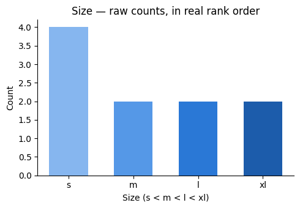
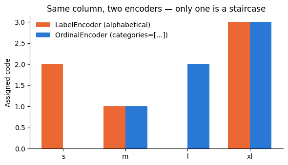

Kiran had a City column: Delhi, Mumbai, Chennai. The model refused text, so he numbered them 1, 2, 3 and moved on.
The model then did what models do — arithmetic. It concluded Chennai (3) was three times Delhi (1), and that the average of Delhi and Chennai was Mumbai.
None of that is true. He had invented an order that does not exist.
One-hot encoding fixes it by giving each city its own yes/no column, so no city outranks another. Ordinal encoding is only correct when the order is genuine — Small < Medium < Large.
🔑 The one idea
One-hot when categories are unordered; ordinal only when the order is real.
Most ML algorithms only understand numbers. Columns like Gender (Male/Female) or Married (Yes/No) are categorical — text labels with no numeric meaning. Before we can feed them to a model, we need to turn them into numbers without inventing a false ordering (e.g. Male=0, Female=1 would wrongly imply Female > Male).
One-hot encoding solves this by turning each category into its own binary (0/1) column instead of a single numeric column. This notebook works through it two ways on the ../../_shared_data/loans.csv dataset:
pandas.get_dummies() — quick, good for exploration.
sklearn.preprocessing.OneHotEncoder — the version you actually want in a real ML pipeline (fit on train, reuse on test/production).
Along the way we also cover why missing values need to be handled first, the "dummy variable trap," and when to reach for one-hot encoding vs. its alternatives.
codecell 1
import pandas as pd
Just pandas — everything below (read_csv, isnull, fillna, get_dummies) is a DataFrame/Series method.
isnull() turns every cell into True/False (missing or not), and .sum() adds those booleans column-wise (True counts as 1) — a one-liner for "how many NaNs per column."
This has to happen before encoding, not after, because both encoders choke on NaN in different ways:
pd.get_dummies() will silently drop NaN rows into no category (all encoded columns become 0) unless you pass dummy_na=True — easy to miss.
sklearn.OneHotEncoder raises an error on NaN by default (unless you set handle_unknown/encoded_missing_value).
.mode()[0] is the most frequent value in the column — the standard way to impute a categorical column (compare: numeric columns are usually filled with .median() or .mean()).
Note the fix from the copy-on-write gotcha we hit earlier: dataset["Gender"].fillna(value, inplace=True) mutates a throwaway copy of the column and silently does nothing to dataset. Reassigning — dataset["Gender"] = dataset["Gender"].fillna(value) — writes the result back into the real DataFrame.
Gender now reads 0. (This particular output also shows Married at 0 — that's a leftover from an earlier out-of-order run, not a real effect of the Gender fillna. If you Restart & Run All top-to-bottom, Married will still show its original missing count here, since its own fillna cell hasn't executed yet at this point in the notebook — worth remembering when a notebook's outputs stop matching its cell order.)
The remaining columns are left untouched — out of scope here since we're only encoding Gender and Married.
Same pattern as Gender — mode imputation, reassigned rather than inplace=True.
codecell 13
en_data = dataset[["Gender","Married"]]
en_data
Output
Gender Married
0 Male Yes
1 Male Yes
2 Female No
3 Male Yes
4 Male No
.. ... ...
613 Female Yes
614 Male Yes
615 Male No
616 Male Yes
617 Male Yes
[618 rows x 2 columns]
Pulling out just the two columns we're going to encode. Both are nominal categorical variables — categories with no inherent order (Male isn't "more" or "less" than Female). That distinction matters:
Ordinal (e.g. an education level High School < Bachelors < Masters) → encode as ordered integers instead (OrdinalEncoder), so the model can actually use the ordering. One-hotting an ordinal column throws away information the model could have used.
Dependents, Education, Property_Area, and Loan_Status are also categorical in this dataset and would follow the exact same recipe — left out here just to keep the example focused.
Married (2 unique values) → Married_No, Married_Yes
Each row gets exactly one True per original column — that single "hot" (on) bit among otherwise-zero columns is where the name comes from.
Watch this:Gender_Female and Gender_Male are perfect opposites — if you know one, you automatically know the other (Male = NOT Female). Keeping both is redundant and, for linear models, actively harmful (it's called the dummy variable trap — more on this further down, where drop="first" fixes it).
The encoded columns are bool, not int — True/False instead of 1/0. That's a memory optimization (1 byte per bool vs. 8 bytes for a default int64); 618 rows × 4 columns fits in 2.5 KB. Most ML libraries treat True/False as 1/0 automatically, but if something insists on numeric dtype, .astype(int) converts them explicitly.
codecell 21
from sklearn.preprocessing import OneHotEncoder
Why a second way to do the same thing? pd.get_dummies() is convenient for a one-off notebook, but it doesn't remember what it did — it just looks at whatever data you hand it right now and creates columns for whatever categories happen to be present. Two problems that causes in real ML work:
If your test/production data has a category that never showed up in training, get_dummies() won't create a column for it, and your train/test column counts will mismatch.
If a category is missing from a later batch, you lose a column that your trained model still expects.
OneHotEncoder fixes this with the same fit / transform contract every sklearn transformer follows: fit() learns the fixed set of categories once (like compiling a schema), and transform() applies that exact schema to any new data afterward — erroring or ignoring cleanly on anything unseen, depending on handle_unknown. That's what makes it safe to drop into a Pipeline/ColumnTransformer and reuse between training and inference.
codecell 23
ohe = OneHotEncoder()
ohe.fit_transform(en_data)
Output
<Compressed Sparse Row sparse matrix of dtype 'float64'
with 1236 stored elements and shape (618, 4)>
Notice the return type: not an array, not a DataFrame — a sparse matrix (Compressed Sparse Row, or CSR). One-hot encoded data is mostly zeros (only one column per category-group is ever "hot"), so instead of storing every zero, sklearn stores just the non-zero coordinates and values.
1236 stored elements, shape (618, 4): 618 rows × 2 encoded groups (Gender, Married) × 1 active flag per group = 1236 ones. A dense array here would allocate 618 × 4 = 2472 cells — noticeably more, and the savings scale up fast with higher-cardinality columns (e.g. one-hotting a zip_code column with 40,000 unique values would be nearly all zeros).
.toarray() expands the sparse matrix back into a regular dense NumPy array — every implicit zero gets written out. Fine for peeking at the data here; in a real pipeline you'd generally leave it sparse (or construct with OneHotEncoder(sparse_output=False) if you specifically need dense) since most sklearn estimators accept sparse input directly and there's no reason to pay the memory cost.
codecell 27
ar = ohe.fit_transform(en_data).toarray()
pd.DataFrame(ar, columns=["Gender_Female","Gender_Male","Married_No","Married_Yes"])
Column names are hardcoded by hand here — fragile, since it depends on knowing the exact category order sklearn picked. The robust way to get them is ohe.get_feature_names_out(["Gender", "Married"]), which returns the real column names sklearn assigned, in the right order, straight from the fitted encoder.
This is the dummy-variable-trap fix mentioned earlier. drop="first" drops one category per original column instead of keeping all of them:
Gender (Female, Male) → drops Female alphabetically, keeps only Gender_Male. 0 now meansFemale.
Married (No, Yes) → drops No, keeps only Married_Yes. 0 now means No.
Why it matters: with all categories kept, the columns are perfectly collinear (Gender_Female = 1 − Gender_Male), which makes the design matrix rank-deficient for linear/logistic regression — the math for inverting it breaks down, and coefficient estimates become unstable. Dropping one category per group removes the redundancy without losing information: the dropped category is still fully represented, just implicitly, as "all other flags in this group are 0."
Tree-based models (decision trees, random forests, XGBoost) don't do this matrix inversion, so they're unaffected by the trap — you can leave drop="first" off for them if you'd rather keep the encoding symmetric.
codecell 31
ar = ohe.fit_transform(en_data).toarray()
pd.DataFrame(ar, columns=["Gender_Male","Married_Yes"])
That's the full round trip: raw text categories → missing values imputed → one-hot encoded → collinearity-safe encoding via drop="first". Summary of when to reach for this below.
When to Use One-Hot Encoding
Use it when:
The categorical variable is nominal (no order) — Gender, Married, Property_Area, Color, Country, etc.
The model is distance- or weight-based and would otherwise misread integer-coded categories as having magnitude/order: linear & logistic regression, SVM, KNN, k-means, and neural networks all fall into this bucket. Feeding Property_Area = {Rural: 0, Semiurban: 1, Urban: 2} into linear regression tells the model Urban is "twice" Semiurban — nonsense for an unordered category. One-hot avoids that entirely.
Think twice when:
The category is ordinal. An education level with a real ranking should use OrdinalEncoder (or a manual integer map) instead — one-hot throws away the order information the model could use.
Cardinality is high (dozens/hundreds/thousands of unique values — think zip_code, user_id, product_sku). One-hot then explodes column count, which:
blows up memory/compute (mitigated somewhat by sparse matrices, as seen above, but still)
creates a lot of very sparse, low-signal columns that hurt models prone to overfitting
Alternatives: target/mean encoding, frequency encoding, the hashing trick, or learned embeddings (common in deep learning / recommendation systems).
Tree-based models with many categories. Random forests / gradient boosting can consume one-hot columns, but they often perform just as well or better with plain integer-encoded categories (or native categorical support, e.g. HistGradientBoostingClassifier, LightGBM, CatBoost) — trees split on thresholds, so they don't assume distance between codes the way linear models do.
Implementation notes:
pd.get_dummies() — fast for one-off EDA in a notebook; not schema-stable across separate train/test calls.
sklearn.OneHotEncoder — the one to use in an actual pipeline: fit on train, transform on test/production so both see identical columns; set handle_unknown="ignore" to avoid blowing up on a category the model has never seen in production; combine with ColumnTransformer to encode some columns while leaving numeric ones alone.
Use drop="first" (or drop="if_binary") for linear/logistic regression to sidestep the dummy variable trap; leave it off for tree-based models or when you specifically want every category explicitly represented.
The other half of Categorical Encoding from 03_Types_Of_Variables.MD's ordinal/nominal split — 09_one_hot_encoding.ipynb handled the nominal side (Gender, Married); this notebook handles turning categories into a single numeric column, and asks when that's actually a safe thing to do.
Label encoding assigns each unique category one integer code (Rural → 0, Semiurban → 1, Urban → 2) instead of one-hot's "one binary column per category." That's more compact, but it implicitly claims an order — fine when the order is real (ordinal data), risky when it isn't (nominal data fed to a distance/weight-based model).
This notebook covers, in order:
The mechanics on a toy example — fit_transform() first, then the exact same result broken into separate fit() and transform() calls.
The same technique on real data — ../../_shared_data/loans.csv's Property_Area column.
Label Encoding vs. One-Hot Encoding, side by side.
When (and why) to reach for Label Encoding instead of One-Hot.
codecell 1
import pandas as pd
Just pandas for now — LabelEncoder comes from scikit-learn, imported once we need it below.
A tiny 5-row toy dataset — one nominal-looking column, name — just to see exactly what LabelEncoder does before trying it on ../../_shared_data/loans.csv. (Names don't really have a natural order; they're used here purely because the mapping is easy to eyeball, not as a real-world label-encoding candidate.)
codecell 5
from sklearn.preprocessing import LabelEncoder
sklearn.preprocessing.LabelEncoder — the scikit-learn class for exactly one job: map each unique category in a 1-D column to an integer 0 .. n_classes-1. Compare 09_one_hot_encoding.ipynb's OneHotEncoder, which maps each category to its own binary column instead — the comparison table near the end of this notebook lays out when to pick which.
codecell 7
le = LabelEncoder()
Instantiate it — same fit / transform contract every sklearn transformer follows (identical shape to OneHotEncoder in 09_one_hot_encoding.ipynb), just with a 1-D column in and a 1-D column out instead of many columns out.
codecell 9
df["en_name"]=le.fit_transform(df["name"])
df
Output
name en_name
0 Kali 2
1 Cow 1
2 Cat 0
3 dog 4
4 black 3
fit_transform() is the one-call shortcut — it does two jobs at once:
fit: scan df["name"], find the unique categories, and assign each one a code.
transform: replace every original value with its assigned code.
The codes above aren't in the order the names appeared in the DataFrame — they're in sorted order: LabelEncoder sorts the unique values first (the same rule Python's default string sort uses — uppercase letters sort before lowercase, since 'C' (67) < 'b' (98) in ASCII), then assigns 0, 1, 2, ... down that sorted list. Confirmed directly in the next cell.
classes_ is where the fitted encoder stores what it learned — the sorted list of unique categories, in the exact order their integer codes were assigned. Index into it with a code to decode by hand: le.classes_[2] → 'Kali', matching the en_name = 2 row above. This is also exactly what fit() alone produces, with no encoding applied yet — see next.
codecell 13
le2 = LabelEncoder()
le2.fit(df["name"])
Output
LabelEncoder()
This is fit() in isolation — it only learns. It scans df["name"], works out the sorted class list, and stores it on the encoder (le2.classes_ below) — but it hasn't touched df["name"] itself, and there's no encoded output yet. Notice the cell's output is the encoder object printing itself (LabelEncoder()), not a list of numbers — fit() returns self, not the transformed data.
Same sorted class list as before — fit() alone already fully determines the mapping. Encoding the actual data is a separate step, next.
codecell 17
le2.transform(df["name"])
Output
array([2, 1, 0, 4, 3])
transform() in isolation — takes the mapping fit() already learned and applies it, returning the integer codes. le2.fit(df["name"]).transform(df["name"]) (two calls) produces exactly the same array as le.fit_transform(df["name"]) (one call) — fit_transform is purely a convenience wrapper, not a different algorithm.
Why bother keeping them separate, then? Because in a real train/test split you must keep them separate:
encoder.fit(X_train[col]) — learn the category → code mapping once, from training data only.
encoder.transform(X_train[col]) and encoder.transform(X_test[col]) — apply that same fixed mapping to both.
If you called fit_transform() on the test set too, you'd get a second, independent mapping — possibly assigning Urban a different code than the one the trained model learned to associate with Urban. Same idea as 09_one_hot_encoding.ipynb's point about OneHotEncoder: fit the schema once, reuse it everywhere. (Backend mental model: fit() is building a HashMap<String, Integer> once from a known vocabulary; transform() is repeated map.get(key) lookups against that same map — you don't rebuild the map from a different, possibly-incomplete vocabulary every time you need a lookup.)
inverse_transform runs the mapping backwards — codes back to original labels — using the same classes_ list. Useful for turning a model's numeric prediction (say, an encoded target class) back into a human-readable label before showing it to anyone.
Same Technique, Real Data
Now ../../_shared_data/loans.csv's Property_Area column — Rural / Semiurban / Urban, the same one 09_one_hot_encoding.ipynb flagged as nominal (no natural order) and one-hot encoded instead. It's label-encoded here anyway, deliberately, to show the mechanics on real data — see the comparison section below for why nominal data like this is usually the wrong candidate for label encoding into a linear/distance-based model, and where label encoding is actually the right call instead.
Four unique values come back — including nan. Property_Area has missing values (9 of them, per 09_one_hot_encoding.ipynb's isnull().sum() check) — normally the move is to impute before encoding (mode-fill, same as Gender/Married in that notebook). Skipped here on purpose, to show what actually happens: LabelEncoder in this environment's scikit-learn version (1.8.0) treats nan as a valid fourth class rather than raising an error — confirmed below via la.classes_. That's version-dependent behavior worth checking rather than assuming — older scikit-learn releases raised on NaN in LabelEncoder.fit(). Either way, treating "missing" as if it were a real category conflates two different meanings, so imputing first is still the safer default in practice.
codecell 26
la = LabelEncoder()
A separate encoder instance for this column — one LabelEncoder per column, never shared, since each learns its own independent mapping (la for Property_Area, distinct from le/le2 above for name).
codecell 28
la.fit(dataset["Property_Area"])
Output
LabelEncoder()
fit() in isolation, on real data. Output is the encoder printing itself again — same signal as before: no encoded values yet, just the learned mapping stored internally.
Confirms the gotcha from above: 4 classes, with nan sorted in among the real category names as if it were one of them (array(['Rural', 'Semiurban', 'Urban', nan], dtype=object)) — this is what makes the nan → 3 in the next cell's output meaningful rather than a bug.
transform() in isolation, applying la's already-learned mapping to the whole column — a 618-length array of the codes la.classes_ established: Rural→0, Semiurban→1, Urban→2, nan→3. Deliberately split from fit(), exactly like the toy example: in a real pipeline, la.fit() runs once on training data, and this transform() line runs separately on train, validation, and test — never re-fitting on new data.
codecell 34
dataset["Property_Area"] = transformed
codecell 35
dataset["Property_Area"].unique()
Output
array([1, 2, 3, 0])
Confirms the swap: what used to be ['Semiurban', 'Urban', nan, 'Rural'] (text, in dataset appearance order) is now [1, 2, 3, 0] (the same four categories, as integers) — 1=Semiurban, 2=Urban, 3=nan, 0=Rural, matching la.classes_ exactly.
Label Encoding vs. One-Hot Encoding
Label Encoding (LabelEncoder)
One-Hot Encoding (OneHotEncoder / get_dummies)
What it produces
One column, integer codes 0..n-1
n (or n-1) binary columns, one per category
Order implied?
Yes — 2 is "more than" 1 as far as the number is concerned
No — each category is its own independent 0/1 flag
Right for
Ordinal categories (real rank) or the target/label column yor tree-based models fed nominal data
Nominal categories (no real rank) fed to linear/distance-based models
Wrong for
Nominal categories fed to linear/distance-based models (invents a fake order — see Language example in 03_Types_Of_Variables.MD)
High-cardinality nominal columns (explodes into hundreds/thousands of sparse columns)
Output size
Always 1 column, however many categories
Grows with category count
../../_shared_data/loans.csv example
Property_Area → [0, 1, 2, 3] (used above; not ideal here — see below)
Gender, Married → Gender_Male, Married_Yes, ... (09_one_hot_encoding.ipynb)
The Property_Area example above is actually a case against label encoding, done deliberately to show the mechanics: Property_Area is nominal (no real rank between Rural/Semiurban/Urban), so feeding [0, 1, 2, 3] into a linear or distance-based model would wrongly suggest Urban (2) is "more" than Semiurban (1) — exactly the trap 03_Types_Of_Variables.MD's Language example warned about. 09_one_hot_encoding.ipynb one-hot-encodes this same column for that reason. Label encoding would be the right call here only if the model reading it is tree-based (see below).
When (and Why) to Use Label Encoding
Use it when:
The category is ordinal — a real rank exists (Nice < Good < Great, Low < Medium < High). The integer order the model sees now matches a genuine order in the data, so nothing false is implied.
Encoding the target/label column (y) in a classification problem — scikit-learn's classifiers expect integer-coded class labels regardless of whether the classes are ordinal or nominal; this is the one place label encoding is the default even for nominal classes, because there's no "distance between predictions" being computed the way there is between input feature columns.
The model is tree-based (Decision Tree, Random Forest, XGBoost, LightGBM, CatBoost) and the column is high-cardinality nominal. Trees split on thresholds (is code <= 1.5?), not on distance or magnitude, so a fake numeric order barely hurts them — and label encoding avoids one-hot's column explosion on a column with many categories (a zip_code-style column, say).
Think twice when:
The category is nominalandthe model is linear/distance-based — Linear/Logistic Regression, SVM, KNN, k-means, neural networks. These all either compute distances or fit a single coefficient per feature, and both interpretations break when the numeric order is fake. This is exactly the Property_Area situation above — one-hot encoding (09_one_hot_encoding.ipynb) is the safer default there.
Implementation notes:
One LabelEncoder instance per column — it only knows how to encode the single 1-D array it was fit on.
fit() on training data only; transform() (never fit_transform() again) on validation/test/production, so every split shares the exact same mapping.
Check for NaN before fitting — don't rely on a specific scikit-learn version's behavior (this one happens to silently treat NaN as its own class); impute first, same as the categorical mode-fill used for Gender/Married in 09_one_hot_encoding.ipynb.
inverse_transform() decodes integer codes back to the original labels — handy for turning a model's predicted class back into something readable.
The third and last piece of the categorical-encoding puzzle from 03_Types_Of_Variables.MD:
Encoder
Rank order
Who decides the order
OneHotEncoder (09)
none implied
n/a — no single number per category
LabelEncoder (10)
implied, but arbitrary
the encoder — always alphabetical
OrdinalEncoder (this notebook)
implied, and real
you — you pass the exact order in
Ordinal encoding is label encoding's fix for the one thing 10_Label_Encoding.ipynb
flagged as risky: LabelEncoder can't be told what order to use, so it's only safe
when alphabetical order happens to line up with reality (rare). OrdinalEncoder
takes an explicit categories= list — the order you supply is the rank the model
sees. This notebook covers, in order:
Mechanics on a toy example (Size: s < m < l < xl) — OrdinalEncoder, then a
concrete side-by-side against LabelEncoder on the same column, to see exactly
what goes wrong when the order isn't explicit.
A manual .map() alternative — same idea as 10's fit/transform duality.
Real data — ../../_shared_data/loans.csv's Property_Area (nominal, kept only to fix a real bug
in the original code) and Dependents (genuinely ordinal: 0 < 1 < 2 < 3+).
Visualizations, a three-way comparison table, and when/why to reach for this one.
codecell 1
import pandas as pd
import matplotlib.pyplot as plt
import numpy as np
matplotlib/numpy added this time for the visualizations further down —everything else is the same pandas + scikit-learn stack as 09/10.
A toy Size column — and unlike 10_Label_Encoding.ipynb's name example, this one is
genuinely ordinal: s < m < l < xl is a real rank, not just convenient for eyeballing.
That's the right kind of column to reach for ordinal encoding on.
codecell 5
size_order = ["s", "m", "l", "xl"]
seq_ramp = ["#86b6ef", "#5598e7", "#2a78d6", "#1c5cab"] # sequential blue, light -> dark = low -> high rank
counts = df["Size"].value_counts().reindex(size_order)
fig, ax = plt.subplots(figsize=(5, 3.5))
ax.bar(size_order, counts.values, color=seq_ramp, width=0.6)
ax.set_title("Size — raw counts, in real rank order")
ax.set_xlabel("Size (s < m < l < xl)")
ax.set_ylabel("Count")
ax.spines[["top", "right"]].set_visible(False)
plt.tight_layout()
plt.show()

Output from this notebook.
Visualization 1 — raw counts, ordered correctly.value_counts() on its own would
return categories sorted by frequency, not rank — .reindex(size_order) forces the
x-axis into the real s → xl order before plotting. The bars use one sequential blue
ramp, light to dark, so the color itself echoes the rank (lightest = smallest size) —
this is a single ordered series, not four unrelated categories, so it gets one hue
stepped by darkness rather than four different hues.
codecell 7
ord_data = [["s","m","l","xl"]]
The order OrdinalEncoder will assign codes in — a list of lists, one inner list
per column being encoded (only one column here, Size). Whatever order you write the
values in is the rank order the encoder learns: s here is first, so it becomes 0.
LabelEncoder has no equivalent parameter — it can't be told an order at all.
codecell 9
from sklearn.preprocessing import OrdinalEncoder, LabelEncoder
Both imported here — LabelEncoder only to run the direct comparison below, not
because it's the right tool for this column.
codecell 11
oe = OrdinalEncoder(categories=ord_data)
Instantiate with the explicit order from above. Compare 10_Label_Encoding.ipynb's
LabelEncoder() — no arguments there, because there's nothing to configure; here the
categories= argument is the entire point of choosing this encoder.
fit() in isolation. One difference from LabelEncoder worth catching early:
df[["Size"]] — double brackets, a DataFrame (2D), not df["Size"] (1D). OrdinalEncoder
is built for X (feature columns, possibly several at once); LabelEncoder is built for
y (a single target column) and only accepts 1D input. Passing a 1D column here raises a
ValueError — a genuinely common gotcha when switching between the two.
codecell 15
df["Size_En"]= oe.transform(df[["Size"]])
df
Output
Size Size_En
0 s 0.0
1 m 1.0
2 l 2.0
3 xl 3.0
4 s 0.0
5 s 0.0
6 m 1.0
7 l 2.0
8 xl 3.0
9 s 0.0
transform() in isolation — codes now follow the real order: s=0, m=1, l=2, xl=3,
a perfect staircase. Kept as two separate calls here for the same reason 10 split
fit/transform: fit() once on training data, transform() reused unchanged on
validation/test.
codecell 17
le_check = LabelEncoder()
le_check.fit(df["Size"])
label_codes = le_check.transform(size_order) # what LabelEncoder assigns to s, m, l, xl
ordinal_codes = oe.transform(pd.DataFrame({"Size": size_order}))[:, 0] # what OrdinalEncoder assigns
print("LabelEncoder classes_ (alphabetical):", le_check.classes_)
print("LabelEncoder codes for s, m, l, xl: ", label_codes)
print("OrdinalEncoder codes for s, m, l, xl:", ordinal_codes)
Output
LabelEncoder classes_ (alphabetical): ['l' 'm' 's' 'xl']
LabelEncoder codes for s, m, l, xl: [2 1 0 3]
OrdinalEncoder codes for s, m, l, xl: [0. 1. 2. 3.]
The concrete difference, side by side.LabelEncoder sorts alphabetically —
classes_ comes back ['l', 'm', 's', 'xl'] — so it assigns l=0, m=1, s=2, xl=3.
Read against the real rank (s < m < l < xl), that's backwards and scrambled: it
claims the largest size (l) is the smallest code. OrdinalEncoder, told the
real order explicitly, gives the correct staircase s=0, m=1, l=2, xl=3. Same
column, same five lines of setup, two completely different — and only one
correct — numeric relationships. Visualized next.
codecell 19
x = np.arange(len(size_order))
width = 0.35
fig, ax = plt.subplots(figsize=(6, 3.5))
ax.bar(x - width/2, label_codes, width, label="LabelEncoder (alphabetical)", color="#eb6834")
ax.bar(x + width/2, ordinal_codes, width, label="OrdinalEncoder (categories=[...])", color="#2a78d6")
ax.set_xticks(x)
ax.set_xticklabels(size_order)
ax.set_ylabel("Assigned code")
ax.set_title("Same column, two encoders — only one is a staircase")
ax.legend(frameon=False)
ax.spines[["top", "right"]].set_visible(False)
plt.tight_layout()
plt.show()

Output from this notebook.
Visualization 2 — why the difference matters. Orange (LabelEncoder) zigzags;
blue (OrdinalEncoder) climbs in a straight staircase matching s < m < l < xl. Two
series here (two different encoders, i.e. two different identities), so they get
two distinct hues with a legend — not a light-to-dark ramp, since these aren't steps
of one ordered thing the way the raw-count chart was.
Same duality 10_Label_Encoding.ipynb showed for fit_transform vs. separate
fit/transform — here it's OrdinalEncoder vs. a plain Python dict + .map(),
both expressing the identical mapping.
codecell 23
ord_data1= {"s":0,"m":1,"l":2,"xl":3}
A hand-written lookup table saying exactly the same thing as ord_data = [["s","m","l","xl"]]
above, just as a dict instead of an ordered list.
Size Size_EN_MAP
0 s 0
1 m 1
2 l 2
3 xl 3
4 s 0
5 s 0
6 m 1
7 l 2
8 xl 3
9 s 0
.map() looks up every value in ord_data1 and substitutes its code — identical
output to OrdinalEncoder above (s=0, m=1, l=2, xl=3). The trade-off: .map() is
one line and needs no import, but it's entirely manual — any value not in the dict
silently becomes NaN, with no warning. OrdinalEncoder gives the same result plus
the sklearn safety net: handle_unknown="use_encoded_value", unknown_value=np.nan
(or an error, by default) for values it wasn't fit on, and it drops straight into a
Pipeline/ColumnTransformer the way a plain dict can't.
Real Data — Two Columns, Two Different Situations
../../_shared_data/loans.csv again. Two columns this time:
Property_Area — Rural/Semiurban/Urban. Same column 09 and 10 used —
it's nominal, not ordinal, but it's encoded here anyway to fix a real bug that
was in the original version of this notebook (see the callout below).
Dependents — 0/1/2/3+. This one is genuinely ordinal: more
dependents is a real, ordered quantity.
That's the exact copy-on-write gotcha 09_one_hot_encoding.ipynb already called out
for Gender: dataset["Property_Area"].fillna(..., inplace=True) mutates a throwaway
copy of the column, not dataset itself — pandas even raises a ChainedAssignmentError
warning about it. dataset["Property_Area"] was left with NaN still in it, and two
cells later OrdinalEncoder(categories=[["Rural","Semiurban","Urban"]]).fit_transform(...)
crashed with ValueError: Found unknown categories [nan] in column 0 during fit — the
explicit categories list has no entry for nan, so the encoder correctly refuses to
guess. Reassigning (dataset["Property_Area"] = dataset["Property_Area"].fillna(...))
writes the result back into the real column, so unique() above now comes back with
no nan — the fix is confirmed before the encoder ever runs, not after it fails.
codecell 34
en_data_ord = [["Rural","Semiurban","Urban"]]
No real rank between these three (nominal — 09 one-hot-encoded this exact column
for that reason), but an explicit order still has to be supplied for OrdinalEncoder
to run at all. Picked arbitrarily here purely to demonstrate the mechanics on a
familiar column, now that the missing-value bug is fixed.
Runs cleanly now — no nan left to trip the encoder. (The original also had a second
bug on this line, dataset[10] instead of showing the encoded column — indexing a
DataFrame with a bare integer like that raises KeyError unless a column is literally
named 10. Fixed to dataset["Property_Area"].head(10), which actually shows the
result: Rural→0, Semiurban→1, Urban→2.)
Worth restating: this column being encodable now doesn't make label/ordinal
encoding the right choice for it in a real model — see the comparison table further
down. It's nominal; 09's one-hot encoding is still the safer default for a
linear/distance-based model.
Dependents — the genuinely ordinal one
Unlike Property_Area, this column has a real order: 0 < 1 < 2 < 3+ dependents
is an actual ordered quantity, not an arbitrary label. This is the kind of column
OrdinalEncoder was built for.
A dedicated encoder instance (oe_dep) with its own categories= — same pattern as
la/le2 getting their own LabelEncoder in 10, one encoder per column. "0" → 0, "1" → 1, "2" → 2, "3+" → 3, the real order preserved exactly, unlike what LabelEncoder
would have done here too (alphabetical on these strings happens to coincidentally
match, since "0" < "1" < "2" < "3+" sorts the same both ways — but that's luck, not a
guarantee, which is exactly why categories= is still the safer, explicit choice).
Visualization 3 — the real-data version of Visualization 1. Same sequential
blue ramp, light-to-dark following the real rank, now on ../../_shared_data/loans.csv instead of the
toy example — most applicants have 0 dependents, tapering off through 3+.
Label Encoding vs. One-Hot Encoding vs. Ordinal Encoding
LabelEncoder (10)
OneHotEncoder (09)
OrdinalEncoder (this notebook)
Output
1 column, integer codes
n (or n-1) binary columns
1 column, integer codes
Who sets the order
The encoder — always alphabetical
n/a — no order implied
You — via categories=
Order implied?
Yes, but arbitrary
No
Yes, and (if you set it right) real
Input shape
1D — a single column (df["col"])
2D — one or more columns
2D — one or more columns
Intended for
The target column y
Nominal feature columns X
Ordinal feature columns X
Right for
Encoding y in classification
Nominal X, linear/distance-based models
Ordinal X, any model
Wrong for
Nominal X into linear/distance-based models
High-cardinality nominal columns
Nominal X with no real order to supply
Unseen category at transform time
Errors
handle_unknown="ignore" available
handle_unknown="use_encoded_value" + unknown_value= available
../../_shared_data/loans.csv example
— (not used on X here)
Gender, Married (09)
Dependents (real rank) — Property_Area here only to show mechanics
The one-line version: all three answer "how do I turn text into numbers,"
and only OrdinalEncoder lets you also answer "in what order."
When (and Why) to Use Ordinal Encoding
Use it when:
The category has a real, known rank and you can write that order down —
sizes, ratings (Low/Medium/High), education levels, Dependents-style counts
bucketed as strings. The whole benefit over LabelEncoder is that you supply the
order instead of hoping alphabetical sort happens to match reality.
You need more than one ordinal column encoded together — OrdinalEncoder
takes 2D input and a categories= list-of-lists, so one instance can fit several
columns at once (each with its own order), where LabelEncoder needs a separate
instance per column since it only accepts 1D.
Production robustness matters — handle_unknown="use_encoded_value", unknown_value=np.nan handles a category showing up at inference time that
training never saw, without crashing the pipeline (a plain .map() dict just
silently returns NaN with no such configuration).
Think twice when:
There's no real order — forcing categories= on a nominal column (like
Property_Area above) doesn't make the order real; it just picks one arbitrary
order instead of the alphabetical one LabelEncoder would have picked. One-hot
encoding (09) is still the honest choice for nominal data going into a
linear/distance-based model.
The order is debatable — if two people would rank the categories differently,
that's a sign the "order" is more nominal than ordinal in practice; encoding it
as ordinal bakes in one arbitrary opinion as if it were fact.
Implementation notes:
categories= must list every value that will ever appear, in rank order, as
a list of lists (one inner list per column) — a value missing from that list is
treated as unknown, not silently appended.
Always pass a 2D slice (df[["col"]], double brackets), never a 1D df["col"] —
the single most common OrdinalEncoder error.
Impute missing values before fitting — an explicit categories= list has no
slot for NaN unless you deliberately add one, so a leftover NaN (from a bug
like the one fixed above, or from skipping imputation entirely) raises
ValueError: Found unknown categories [nan] at fit time.
✍️ Handwritten notes
The pages written by hand while working through this topic — the version that came before the tidy write-up. Click any page to enlarge.